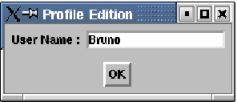
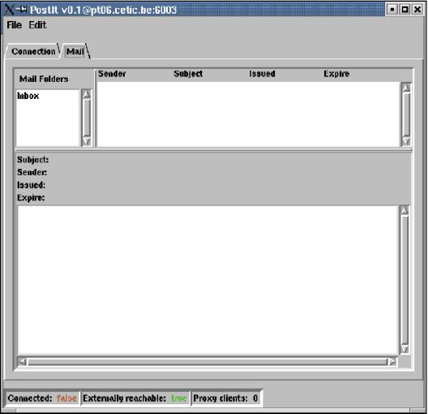
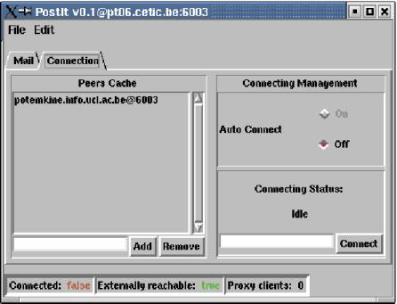
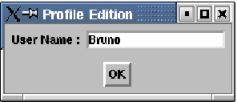
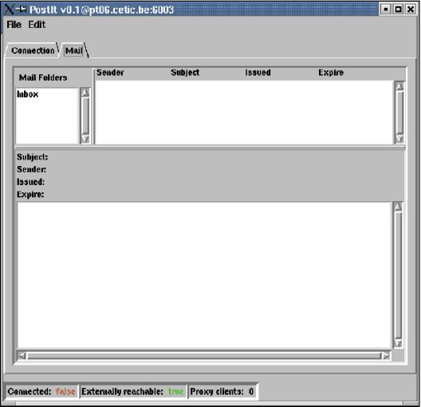
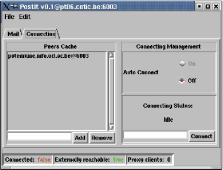

PostIt Application (vs 2.0)
Description
PostIt is an example of the appliance of the peer-to-peer (P2P) technology to area of collaborative work. It is a graphical application where users share a board for publishing postits (short time lived texts). It is written in Mozart.
PostIt uses the P2PS library (available here). P2PS is a P2P library implementing a distributed hash table, called Tango.
The PostIt application requires the QTk.ozf functor for graphical display. Usually Mozart distributions include the QTk module. However you can have QTk module either by installing the standard Mozart library, or by taking it from Mogul.
If you choosed to compile the application yourself, you can invoke it by simply typing: "PostIt".
Then, if everything goes right, the Profile Edition window will be displayed inviting you to enter a user name. Note that you can choose the desired character font size by invoking the application with the parameter --fs=font_size.

The user name will be used by the system to fill in the sender field of all messages that you will send during the PostIt session. Note, you can change your user name during one session. Once you entered your user name, click on the OK button to register.
The next appearing window is the main PostIt window.

This main window is composed of three sections : menu, message display, and node status.
The File menu will allow you to create new messages and to exit the application while the edit menu will allow you to edit the user profile.
The second section (message display) is composed by 3 sub-sections: Mail Folders List (default Inbox), Message Header List and Message. The mail folders list shows you the available mail folders and the amount of unread messages in each folders. Currently only one folder exists (Inbox) and you are not allowed to create a new one.
The second sub-section displays the list of messages header contained in the selected folders (bold font = unread message). The third sub-section displays the message selected in the Message Header List. Finally, the third section displays the node status: Connected is true if the node is member of the PostIt network; Externally reachable is true if the node is member of the PostIt network as a peer node (not as a client to a proxy); and Proxy clients is the number of nodes (usually behind fire-walls) using your PostIt application as a Proxy to connected to the PostIt network.
Note that even if you are not connected to the PostIt network you can compose messages by selecting new messages in the file menu or by clicking with the right mouse button on the message display area.

The compose message window allows the user to specify the subject and the body of the message. Moreover, the user can choose the duration of the message on the PostIt board (by default 15 minutes). The duration of a message is the amount of time the message will stay inside the system. Once this period is passed, the message will automatically disappear from the system. Once you finish editing the message, click on send to transmit it to all the PostIt community or click on cancel if you changed your mind.
The latest graphical component is the Connection one that you can display by selecting it in the main window panel.

There you can see the Peers cache. The peers cache display the address of well known peer node. This cache is used if the auto connection is activated (actually this feature is not yet implemented). If the auto connection is not activated or failed, you can connect your application to the PostIt network by entering the address and the port number of a known peer in the bottom-right entry widget (PeerAddress@PortNumber). Click on Connect to perform the connection. During the connection establishment, the Connecting Status is In Progress..., once the connection is established, the Connecting Status is Connection Succeeded while if the connection could not be established, the Connecting Status is Connection Failed.
PostIt uses the P2PS library (available here). P2PS is a P2P library implementing a distributed hash table, called Tango.
Program retrieving and compilation
The PostIt code is no more compatible with the new P2PS library. If you really want it, we can provide it for you; just let us know.The PostIt application requires the QTk.ozf functor for graphical display. Usually Mozart distributions include the QTk module. However you can have QTk module either by installing the standard Mozart library, or by taking it from Mogul.
PostIt invocation and use
You can invoke the precompiled PostIt by typing: "ozengine PostIt.exe". This will call the right oz engine on different OSs.If you choosed to compile the application yourself, you can invoke it by simply typing: "PostIt".
Then, if everything goes right, the Profile Edition window will be displayed inviting you to enter a user name. Note that you can choose the desired character font size by invoking the application with the parameter --fs=font_size.

The user name will be used by the system to fill in the sender field of all messages that you will send during the PostIt session. Note, you can change your user name during one session. Once you entered your user name, click on the OK button to register.
The next appearing window is the main PostIt window.

This main window is composed of three sections : menu, message display, and node status.
The File menu will allow you to create new messages and to exit the application while the edit menu will allow you to edit the user profile.
The second section (message display) is composed by 3 sub-sections: Mail Folders List (default Inbox), Message Header List and Message. The mail folders list shows you the available mail folders and the amount of unread messages in each folders. Currently only one folder exists (Inbox) and you are not allowed to create a new one.
The second sub-section displays the list of messages header contained in the selected folders (bold font = unread message). The third sub-section displays the message selected in the Message Header List. Finally, the third section displays the node status: Connected is true if the node is member of the PostIt network; Externally reachable is true if the node is member of the PostIt network as a peer node (not as a client to a proxy); and Proxy clients is the number of nodes (usually behind fire-walls) using your PostIt application as a Proxy to connected to the PostIt network.
Note that even if you are not connected to the PostIt network you can compose messages by selecting new messages in the file menu or by clicking with the right mouse button on the message display area.
The compose message window allows the user to specify the subject and the body of the message. Moreover, the user can choose the duration of the message on the PostIt board (by default 15 minutes). The duration of a message is the amount of time the message will stay inside the system. Once this period is passed, the message will automatically disappear from the system. Once you finish editing the message, click on send to transmit it to all the PostIt community or click on cancel if you changed your mind.
The latest graphical component is the Connection one that you can display by selecting it in the main window panel.

There you can see the Peers cache. The peers cache display the address of well known peer node. This cache is used if the auto connection is activated (actually this feature is not yet implemented). If the auto connection is not activated or failed, you can connect your application to the PostIt network by entering the address and the port number of a known peer in the bottom-right entry widget (PeerAddress@PortNumber). Click on Connect to perform the connection. During the connection establishment, the Connecting Status is In Progress..., once the connection is established, the Connecting Status is Connection Succeeded while if the connection could not be established, the Connecting Status is Connection Failed.